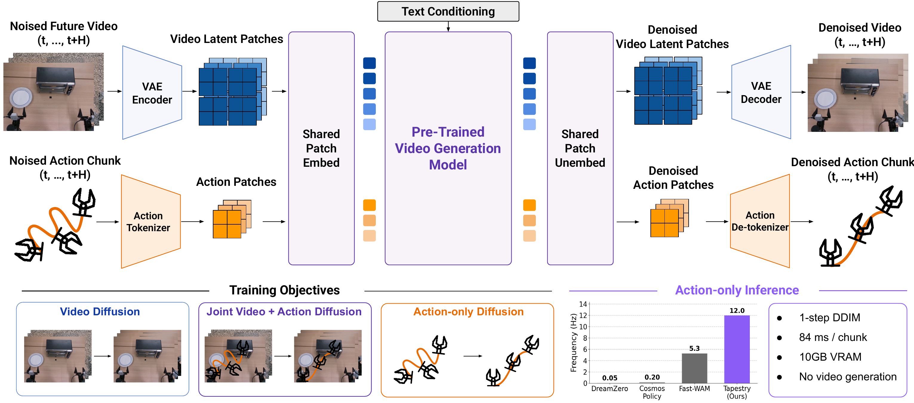

Preprint · under review
TAPESTRY
A single backbone for video
generation and robot control.
Abstract
Pretrained video generation models encode rich priors about physical interactions, but leveraging them for robot control typically requires either resource-intensive video generation at test time or action heads trained from scratch that do not fully utilize the pretrained backbone. We introduce TAPESTRY, a world-action model that repurposes a pretrained video diffusion transformer into a robotic policy without requiring video generation at inference. Our key idea is to treat robot actions as single-patch tokens in the video model's latent space. A lightweight linear projection maps each action timestep to the patch dimensions of the pretrained VAE, and the resulting tokens are processed by the same patchifying layers and transformer backbone used for video.
The shared backbone is optimized through three diffusion objectives sampled per minibatch element: video diffusion on robot and human videos to establish dynamics priors, joint video + action diffusion on robot demonstrations under a coupled timestep and block-causal mask, and action-only diffusion conditioned on clean image latents. At test time, the model generates a compact action token sequence in a single DDIM step from pure noise, producing smooth action chunks at 84 ms per chunk on consumer hardware while avoiding the cost of full video generation.
Method

TAPESTRY treats robot actions as single-patch tokens in the video model's latent space. Video latents and action patches share the same patchifying layers and the same diffusion backbone; only the tokenizers differ. The shared backbone is trained jointly on three diffusion objectives, and at test time the policy generates an action chunk in a single DDIM step from pure noise — no video generation required.
In-distribution rollouts
Out-of-distribution generalization
Citation
@article{tapestry2026,
title = {TAPESTRY: A Single Backbone for Video Generation and Robot Control},
author = {Anonymous},
year = {2026}
}